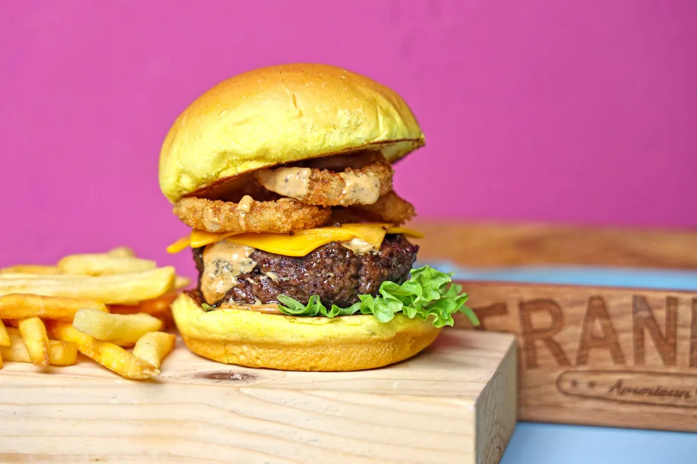

Marketing para delivery: 12 estratégias para vender mais (sem depender de aplicativo)

Marketing para delivery não é postar foto bonita todo dia. É um funil simples: ser encontrado → converter o primeiro pedido → fazer o cliente voltar. A maioria dos deliveries investe só na primeira etapa e deixa a terceira (a mais barata) para o aplicativo — que fica com o cliente.
Etapa 1 — Ser encontrado
1. Google Perfil da Empresa
Quem busca "hamburgueria perto de mim" vê o mapa antes de qualquer site. Cadastre o perfil, escolha a categoria certa, coloque horário, fotos reais e o link do seu cardápio no botão de pedido/site. Peça avaliação a todo cliente satisfeito.
2. Instagram com link do cardápio na bio
Post de produto, bastidor da cozinha e Reels curtos do lanche sendo montado. Todo conteúdo termina no mesmo lugar: "peça pelo link da bio". Nada de "chama no direct" — cada mensagem manual é um pedido que pode se perder.
3. Marketplace como vitrine
iFood e 99Food trazem cliente novo. Use como vitrine e leve a recompra para o canal próprio — de preferência com um cardápio digital integrado ao iFood, para não operar dois sistemas.
4. Anúncios locais
Com R$20 a R$30 por dia num raio de 3 a 5 km dá para testar. O passo a passo está em como fazer anúncios para delivery.
5. Parcerias de bairro
Academias, condomínios, escritórios e faculdades perto da loja: cupom exclusivo em troca de divulgação no grupo de moradores ou funcionários.
Etapa 2 — Converter o primeiro pedido
6. Cardápio que vende sozinho
Foto boa em cada item, descrição que dá fome, categorias claras e checkout em poucos toques. Veja como criar um cardápio digital para hamburgueria.
7. Cupom de primeira compra
Um incentivo pequeno para quem nunca pediu tira a dúvida "será que é bom?".
8. Prova social
Avaliações do Google e prints de clientes no Instagram valem mais que qualquer legenda.
Etapa 3 — Fazer o cliente voltar (onde está o lucro)
9. QR Code na embalagem
Todo pedido que sai — inclusive do aplicativo — leva um QR Code para o seu cardápio próprio com um cupom de volta. Veja QR Code para cardápio digital.
10. Campanhas de WhatsApp
Reativação, dia parado, lançamento. Base própria + disparo segmentado é o marketing com maior retorno do delivery. Exemplos de texto em campanha de WhatsApp para delivery.
11. Fidelidade e ticket médio
Cupons, brinde a cada X pedidos e "peça também" no carrinho. Veja programa de fidelidade e como aumentar o ticket médio.
12. Experiência de entrega
Pedido no prazo, quente e completo é o melhor marketing que existe. Rota organizada e cliente avisado no WhatsApp — veja rota de motoboy para delivery.
Como medir se o marketing está funcionando
- Pedidos por canal (cardápio próprio, app, balcão)
- Ticket médio e taxa de recompra
- Custo por pedido dos anúncios — com Pixel e API de Conversões da Meta e GA4 conectados ao cardápio
No Menuzia, cardápio digital, base de clientes, disparos, cupons, fidelidade e integrações de anúncio estão no mesmo plano de R$67/mês fixo, sem comissão.
Perguntas frequentes
Qual a melhor estratégia de marketing para delivery?
A de maior retorno é fazer o cliente voltar: base de clientes própria, campanhas de WhatsApp segmentadas, fidelidade e QR Code na embalagem. Atrair cliente novo com anúncio e marketplace custa mais.
Como divulgar um delivery que está começando?
Comece pelo Google Perfil da Empresa, link do cardápio na bio do Instagram, cupom de primeira compra e parcerias no bairro. Anúncio local com orçamento pequeno vem depois, para testar.
Quanto investir em marketing no delivery?
Para anúncios locais, um teste de R$20 a R$30 por dia por duas semanas já mostra o custo por pedido. O marketing de recompra pelo WhatsApp tem custo praticamente zero quando a base de clientes é sua.
Pare de pagar comissão por pedido
Tenha seu cardápio digital próprio por R$67/mês fixo. Nós configuramos pra você e damos todo o suporte técnico.
Criar Meu Cardápio Agora →